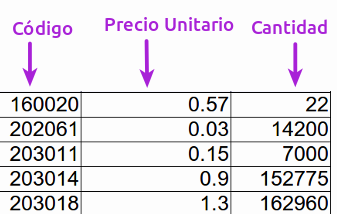

El objetivo de esta sección es brindarnos la posibilidad de graficar sencillamente, a partir de un archivo, un driagrama de Pareto.
Para esto, es necesario subir un archivo .csv que contenga las siguientes 3 columnas:
 Descargar archivo de ejemplo